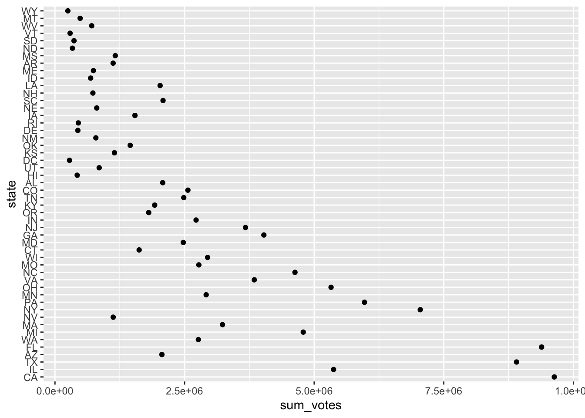

Chapter 6 Factors and strings with forcats and stringr
preamble on working with categorical and text data
6.1 Factors with forcats
Factors are used in R to represent categorical data. In the following, I will briefly introduce you to the forcats package (nice anagram, Hadley!). Factors are augmented vectors which build upon integers. If you want to learn more about them, consider reading this paper.
6.1.1 Creating a factor
You can create a factor in two manners.
- Take a character vector and coerce it to a factor
parties <- c("AfD", "CDU", "CSU", "FDP", "Greens", "Leftists", "SPD")
parties_fct <- as_factor(parties)
typeof(parties_fct)## [1] "integer"- Create it from scratch by providing levels and a vector respectively
party_sample <- c(sample(parties, 49, replace = TRUE), "CUD")
factor(party_sample, levels = parties)## [1] FDP Leftists Leftists AfD CDU CSU Greens CSU
## [9] CSU AfD FDP AfD AfD Greens CSU CDU
## [17] SPD CDU AfD Leftists CSU FDP Leftists AfD
## [25] CSU SPD Greens FDP SPD CDU Greens SPD
## [33] AfD AfD CDU SPD CSU FDP Greens SPD
## [41] Greens CSU Leftists AfD CDU Greens Greens FDP
## [49] SPD <NA>
## Levels: AfD CDU CSU FDP Greens Leftists SPDIf you want to access the levels, use levels()
levels(parties_fct)## [1] "AfD" "CDU" "CSU" "FDP" "Greens" "Leftists" "SPD"6.1.2 Some basic operations
I will have a further look into factors using data on the presidential elections in the U.S.
election_data <- read_csv("data/pres16results.csv") %>%
drop_na() %>%
glimpse()##
## ── Column specification ────────────────────────────────────────────────────────
## cols(
## county = col_character(),
## fips = col_character(),
## cand = col_character(),
## st = col_character(),
## pct_report = col_double(),
## votes = col_double(),
## total_votes = col_double(),
## pct = col_double(),
## lead = col_character()
## )## Rows: 18,007
## Columns: 9
## $ county <chr> "Los Angeles County", "Los Angeles County", "Los Angeles C…
## $ fips <chr> "6037", "6037", "6037", "6037", "6037", "17031", "17031", …
## $ cand <chr> "Hillary Clinton", "Donald Trump", "Gary Johnson", "Jill S…
## $ st <chr> "CA", "CA", "CA", "CA", "CA", "IL", "IL", "IL", "IL", "TX"…
## $ pct_report <dbl> 1.0000, 1.0000, 1.0000, 1.0000, 1.0000, 0.9746, 0.9746, 0.…
## $ votes <dbl> 1654626, 542591, 56905, 46682, 13471, 1528582, 440213, 559…
## $ total_votes <dbl> 2314275, 2314275, 2314275, 2314275, 2314275, 2055215, 2055…
## $ pct <dbl> 0.714965162, 0.234453987, 0.024588694, 0.020171328, 0.0058…
## $ lead <chr> "Hillary Clinton", "Hillary Clinton", "Hillary Clinton", "…Which variables should be converted to factors? – county, cand, st, lead.
election_data_w_fct <- election_data %>%
mutate(county = as_factor(county),
candidate = as_factor(cand),
state = as_factor(st),
lead = as_factor(lead)) %>%
select(county, candidate, state, pct_report:pct, lead)6.1.2.1 Reordering factors
Sometimes you want to reorder factors – for instance, when you want to create plots. (Note: you will learn more on plots in the next session on data visualization)
election_data_w_fct %>%
group_by(state) %>%
summarize(sum_votes = sum(votes)) %>%
ggplot(aes(x = sum_votes, y = state)) +
geom_point()
Two orders would make sense: alphabetical and according to their number of votes. fct_reorder() takes another variable and orders the factor according to it.
election_data_w_fct %>%
group_by(state) %>%
summarize(sum_votes = sum(votes)) %>%
mutate(state = fct_reorder(state, sum_votes)) %>%
ggplot(aes(x = sum_votes, y = state)) +
geom_point()
If you want to have it ordered the other way round, multiply the ordering variable with -1:
election_data_w_fct %>%
group_by(state) %>%
summarize(sum_votes = sum(votes)) %>%
mutate(state = fct_reorder(state, sum_votes*(-1))) %>%
ggplot(aes(x = sum_votes, y = state)) +
geom_point()
You could also achieve this by calling fct_rev() afterwards: it reverses the order of the factor.
election_data_w_fct %>%
group_by(state) %>%
summarize(sum_votes = sum(votes)) %>%
mutate(state = fct_reorder(state, sum_votes),
state = fct_rev(state)) %>%
ggplot(aes(x = sum_votes, y = state)) +
geom_point()
If you want to do bar plots, which you can use to depict the frequency of a value, you can order them according to the frequency they appear in using fct_infreq():
election_data_w_fct %>%
mutate(lead = lead %>% fct_infreq() %>% fct_rev()) %>%
ggplot(aes(x = lead)) +
geom_bar()
6.1.2.2 Modifying levels
Remember the first factor? You need to put some graphs together and decide that you would rather like to use the original German names for the parties. Go for fct_recode().
parties_fct_ger <- fct_recode(parties_fct,
"Buendnis90/Die Gruenen" = "Greens",
"Die Linke" = "Leftists"
)Damn, now the levels are not in alphabetical order anymore.
levels(parties_fct_ger)## [1] "AfD" "CDU" "CSU"
## [4] "FDP" "Buendnis90/Die Gruenen" "Die Linke"
## [7] "SPD"In this case, this can be done pretty quickly. Just copy the levels and manipulate the order:
parties_fct_ger_alphabetical <- fct_relevel(parties_fct_ger,
c("AfD",
"Buendnis90/Die Gruenen",
"CDU",
"CSU",
"Die Linke",
"FDP",
"SPD"))
levels(parties_fct_ger_alphabetical)## [1] "AfD" "Buendnis90/Die Gruenen" "CDU"
## [4] "CSU" "Die Linke" "FDP"
## [7] "SPD"Now you need to write something for someone who is not particular familiar with the political landscape in Germany and rather wants “left,” “center,” and “right” instead of the party’s names. Give fct_collapse() a shot – and feel free to change it if you disagree with my classification.
lcr_ger <- fct_collapse(parties_fct,
left = c("Leftists", "Greens", "SPD"),
centre = c("CDU", "CSU", "FDP"),
right = c("AfD")
)Another thing you could do – and this is handy for the election data set – is collapsing things together according to their frequency of appearance. In the case of the election data set, this might be handy to lump together the candidates into three groups: Donald Trump, Hillary Clinton, and other.
election_data_w_fct %>%
mutate(candidate = fct_lump(candidate, n = 2))## # A tibble: 18,007 x 8
## county candidate state pct_report votes total_votes pct lead
## <fct> <fct> <fct> <dbl> <dbl> <dbl> <dbl> <fct>
## 1 Los Angele… Hillary Cli… CA 1 1.65e6 2314275 0.715 Hillary…
## 2 Los Angele… Donald Trump CA 1 5.43e5 2314275 0.234 Hillary…
## 3 Los Angele… Gary Johnson CA 1 5.69e4 2314275 0.0246 Hillary…
## 4 Los Angele… Other CA 1 4.67e4 2314275 0.0202 Hillary…
## 5 Los Angele… Other CA 1 1.35e4 2314275 0.00582 Hillary…
## 6 Cook County Hillary Cli… IL 0.975 1.53e6 2055215 0.744 Hillary…
## 7 Cook County Donald Trump IL 0.975 4.40e5 2055215 0.214 Hillary…
## 8 Cook County Gary Johnson IL 0.975 5.59e4 2055215 0.0272 Hillary…
## 9 Cook County Other IL 0.975 3.05e4 2055215 0.0149 Hillary…
## 10 Harris Cou… Hillary Cli… TX 1 7.06e5 1302887 0.542 Hillary…
## # … with 17,997 more rowsThe problem here is that Gary Johnson appears as often as the two other candidates (have you ever heard of him?). Hence, fct_lump() cannot decide which levels to lump together. However, it has saved me a couple lines of code:
election_data_w_fct %>%
mutate(candidate = fct_lump(candidate, n = 2) %>% fct_recode("Other" = "Gary Johnson"))## # A tibble: 18,007 x 8
## county candidate state pct_report votes total_votes pct lead
## <fct> <fct> <fct> <dbl> <dbl> <dbl> <dbl> <fct>
## 1 Los Angele… Hillary Cli… CA 1 1.65e6 2314275 0.715 Hillary…
## 2 Los Angele… Donald Trump CA 1 5.43e5 2314275 0.234 Hillary…
## 3 Los Angele… Other CA 1 5.69e4 2314275 0.0246 Hillary…
## 4 Los Angele… Other CA 1 4.67e4 2314275 0.0202 Hillary…
## 5 Los Angele… Other CA 1 1.35e4 2314275 0.00582 Hillary…
## 6 Cook County Hillary Cli… IL 0.975 1.53e6 2055215 0.744 Hillary…
## 7 Cook County Donald Trump IL 0.975 4.40e5 2055215 0.214 Hillary…
## 8 Cook County Other IL 0.975 5.59e4 2055215 0.0272 Hillary…
## 9 Cook County Other IL 0.975 3.05e4 2055215 0.0149 Hillary…
## 10 Harris Cou… Hillary Cli… TX 1 7.06e5 1302887 0.542 Hillary…
## # … with 17,997 more rows6.1.3 Further links
- The chapter in R4DS
- If you want to learn more about factors, consider reading this paper
- Another tutorial